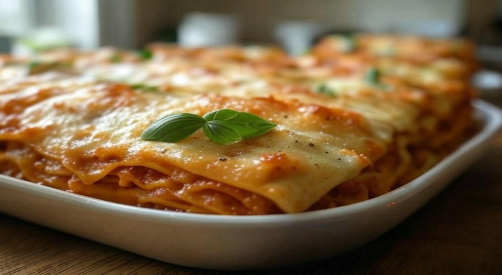

Lasagna Recipes
Home

Imagine sinking your fork into layers of tender pasta, each one smothered in a rich, slow-simmered tomato sauce that bursts with the flavors of ripe tomatoes, garlic, and Italian herbs. Picture the creamy, golden mozzarella stretching with every bite, mingling with velvety béchamel and savory ground beef that melts in your mouth. The top is baked to perfection—crisp, cheesy, and oh-so-satisfying, with a fresh basil leaf adding a pop of aroma that makes your senses tingle.
This isn’t just lasagna—it’s a warm hug on a plate, crafted to comfort and delight. Whether it’s a cozy night in or a family gathering, this dish brings everyone together with its irresistible, hearty goodness.
Ingredients for Lasagna (Serves 6-8)
For the Meat Sauce (Bolognese)
- 2 tablespoons olive oil
- 1 large onion, finely chopped
- 2-3 garlic cloves, minced
- 1 pound (450g) ground beef (or a mix of beef and pork)
- 1/2 cup (120ml) dry red wine (optional, for depth of flavor)
- 2 cans (14 oz/400g each) crushed tomatoes
- 2 tablespoons tomato paste
- 1 teaspoon dried oregano
- 1 teaspoon dried basil
- 1/2 teaspoon sugar (to balance acidity)
- Salt and black pepper, to taste
- Fresh basil leaves (a small handful, chopped, for added freshness)
For the Béchamel Sauce
- 4 tablespoons (60g) unsalted butter
- 1/4 cup (30g) all-purpose flour
- 3 cups (720ml) whole milk, warmed
- 1/4 teaspoon nutmeg (optional, for a classic touch)
- Salt and white pepper, to taste
For the Lasagna Assembly
- 12-15 lasagna noodles (pre-cooked or no-boil, depending on package instructions)
- 2 cups (200g) shredded mozzarella cheese
- 1 cup (100g) grated Parmesan cheese
- 1 cup (250g) ricotta cheese (optional, for extra creaminess)
- Fresh basil leaves (for garnish)